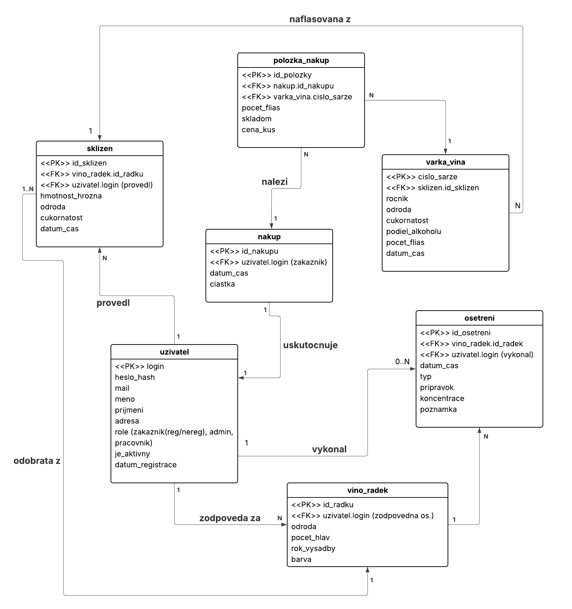

Vinaøství
- Autoøi
- Andrej Miku¹
xmikus19@stud.fit.vutbr.cz
- Vedenie tímu
- Implementácia formulárov pre sklizeò a o¹etrenia
- Implementácia obmedzení pre dáta a u¾ívateµov IS
- Michal Senderák
xsendem00@stud.fit.vutbr.cz
- Vytvorenie modelu, databázy
- Implementácia kostry pre webstránku
- Implementácia funkcionality pre nákup vín
- Matìj Lepe¹ka
xlepes00@stud.fit.vutbr.cz
- Implementácia správy u¾ivateµov
- Deploy na hosting
- Návrh frontendu
- URL aplikace
- https://www.stud.fit.vutbr.cz/~xmikus19/IIS/
- resp.
- https://www.stud.fit.vutbr.cz/~xmikus19/
- Ak nepôjde, tak:
- https://iisss-production.up.railway.app/
U¾ivatelé systému pro testování
| Login | Heslo | Role |
|---|
| admin | admin123 | Administrátor |
| vinar1 | heslo123 | Vinár -- mana¾ér |
| pracovnik1 | heslo123 | Vinár -- robotník |
| zakaznik1 | heslo123 | Registrovaný zákazník |
| zakaznik2 | heslo123 | Neregistrovaný zákazník (náv¹tevník) |
Video
Odkaz na video
Implementace
Informaèný systém je implementovaný ako webová aplikácia v jazyku PHP (verzia 8.4) s vyu¾itím frameworku Laravel.
Architektúra systému vychádza z návrhového vzoru MVC.
Dáta sú ukladané v relaènej databáze MySQL. Frontend vyu¾íva ¹ablónovací systém Blade a CSS framework Bootstrap. Na implementáciu datepickeru sme pou¾ili AJAX JavaScript.
Prípady pou¾itia na skripty
Jednotlivé funkèné celky a prípady pou¾itia sú implementované v nasledujúcich kontroleroch a modeloch:
-
Autentifikácia a autorizácia:
Registrácia, prihlásenie a odhlásenie u¾ívateµov sú rie¹ené v
app/Http/Controllers/AuthController.php.
Riadenie prístupových práv (Roles/Permissions) je zabezpeèené pomocou middleware a policies (app/Policies/).
-
Správa u¾ívateµov (Admin):
CRUD operácie nad u¾ívateµmi, prideµovanie rolí a správa úètov sú implementované v
app/Http/Controllers/UserController.php.
-
Správa vinohradov:
Evidencia riadkov vinohradu, odrôd a ich vlastností je v
app/Http/Controllers/WineyardRowController.php.
-
Zber úrody (Harvests):
Zadávanie a správa zberov, kontrola cukornatosti a dátumov zberu sú obsluhované v
app/Http/Controllers/HarvestController.php.
-
O¹etrovanie a postreky:
Plánovanie a evidencia vykonaných o¹etrení vo vinohrade je rie¹ená v
app/Http/Controllers/TreatmentController.php.
-
Výroba vína (©ar¾e):
Proces fµa¹ovania (vytvorenie vínnej ¹ar¾e z dokonèeného zberu) a evidencia skladových zásob je implementovaná v
app/Http/Controllers/WineBatchController.php.
-
Predaj a objednávky (E-shop):
Zákaznícka sekcia pre nákup vína a prezeranie histórie objednávok je spravovaná v
app/Http/Controllers/PurchaseController.php.
-
Dashboard a prehµady:
Zobrazovanie súhrnných informácií pre rôzne role (Admin, Vinár, Zákazník) zabezpeèuje
app/Http/Controllers/DashboardController.php.
©truktúra pohµadov (Views)
U¾ívateµské rozhranie je rozdelené do adresárov v resources/views/ podµa funkèných modulov (napr. harvests/, wine_batches/, users/). Hlavný layout aplikácie je definovaný v resources/views/layouts/app.blade.php.
Databáze

Instalace
Postup instalace na server:
- composer install
- touch .env
- cp .env.example .env
- php artisan key:generate
- vlo¾i» kµúè do premennej APP_KEY v súbore .env
- npm install
- npm run dev # pre vývoj
- npm run build # pre produkciu
Softwarové po¾adavky:
- PHP verzia 8.4
- sqlite3 3.45.1
Jak rozbalit, konfigurovat, inicializovat databázi:
- touch database/database.sqlite
- php artisan migrate --seed
- php artisan serve
- localhost:8000/
Známé problémy
- Neboli sme rozhodnutí ako implementova» plánované dátumy oproti skutoèným dátumom vykonaných èinností vo vinohrade. Z tohto dôvodu sme ponechali iba plánované dátumy.
- Nevedeli sme ako spusti» MySQL na localhoste. Preto sme lokálne pou¾ívali SQLite, hoci si uvedomujeme, ¾e to nebolo dovolené. Hosting u¾ ale pou¾íva MySQL databázu.